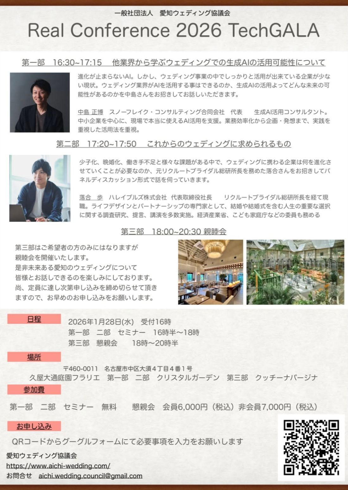

2026年 リアルカンファレンスのお知らせです。
新しい一年の始まりに、これからのウェディングを考える二つのテーマをご用意しました。

16:30〜17:15
進化が止まらないAI。しかし、ウェディング事業の中で、しっかりと活用ができている企業は、まだ少ないのが現状です。ウェディング業界がAIを活用することはできるのか。生成AIの活用によって、どんな未来の可能性が広がるのか——。中島正博さんをお招きして、お話しいただきます。
「AIが大事なのは分かるけれど、自分たちの現場でどう使えばいいのか分からない」。そう感じている方は多いはずです。他業界での実践例から、ウェディングへの応用のヒントを探ります。
中小企業を中心に、現場で本当に使えるAI活用を支援。業務効率化から企画・発想まで、実践を重視した活用法を提案されています。
17:20〜17:50
少子化、晩婚化、働き手不足——。さまざまな課題があるなかで、ウェディングに携わる企業は、何を進化させていく必要があるのか。元リクルート ブライダル総研 所長を務めた落合歩さんをお招きし、パネルディスカッション形式でお話を伺っていきます。
業界を長年データで見つめてこられた落合さんの視点は、これからの一手を考えるうえで、確かな道しるべになります。
リクルート ブライダル総研 所長を経て現職。ライフデザインとパートナーシップの専門家として、結婚や結婚式を含む人生の重要な選択に関する調査研究、提言、講演を多数実施。経済産業省、こども家庭庁などの委員も務められています。
第3部はご希望者の方のみとなりますが、親睦会を開催いたします。是非、未来ある愛知のウェディングについて皆様とお話しできるのを楽しみにしております。尚、定員に達し次第申し込みを締め切らせていただきますので、お早めのお申し込みをお願いします。
※ こちらのセミナーは、どなたでもお申し込みいただけます。
2026年も、より一層、100年後も続くウェディングに向けて、活動してまいりたいと考えております。
みなさまにお会いできますこと、理事一同、楽しみにしております。